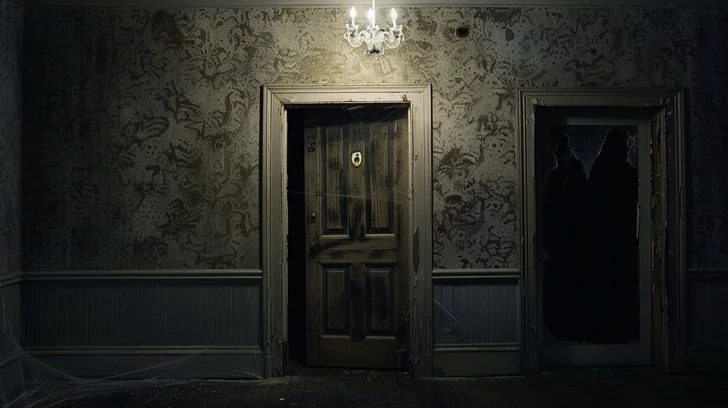

You Leave the door and Begin to walk away, but the door whispers secrets you can't ignore. You turn back. Door: "If you seek adventure, return to me with courage.

1: Return to the door.
2: Ignore it and leave.